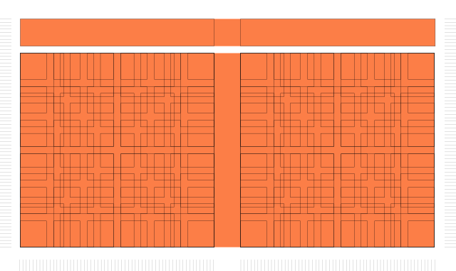

After the little fun experiment that was debugging and finishing the DVD Logo screensaver, I was wondering if it could be possible to add some fancy graphics to all that real state screen that was left behind at the index, like this legendary homepage from Nardove.
Soon the rabbit hole opened beneath me, and after begin exposed to a myriad of 2D Canvas js libraries, I stumbled upon the page of fellow modernist Rune Madsen and his online programming design systems.
If you ever heard the name of Karl Gerstner probably you should be as excited as I was when I finally found a guy that takes the work of this pioneer as seriously as I do.
Well, I certainly saw the connection of his design philosophy with our modern computers and the web when I first heard about the guy, but it was not until I had this page in place and heard again of him, that realized the possibility of pulling off such design.
After a little refresher, and while I was fighting to move Haishoku Soukan away from jQuery, an idea was born.
- Using mustache you can load anything to the page programatically. Well, with enough noise, even the content pharagraphs can be randomized. Let's fkcing do it.
- Let's try to do something about the empty background, but for the art to be preserved in all his autogenerated glory, the background has to stay between loads and the content AJAXed on a top layer.
- Heck, it's true you can even autogenerate some blocky logotypes. Count me in.
I'm aware that there's people out there that create impossible stuff just for fun, but for my Modernist ego (and tiny skill), this modest goals seems on reach and possible in the land of the staticness. And I'm not going to scrap everything already done.
So anyway, I started blasting.